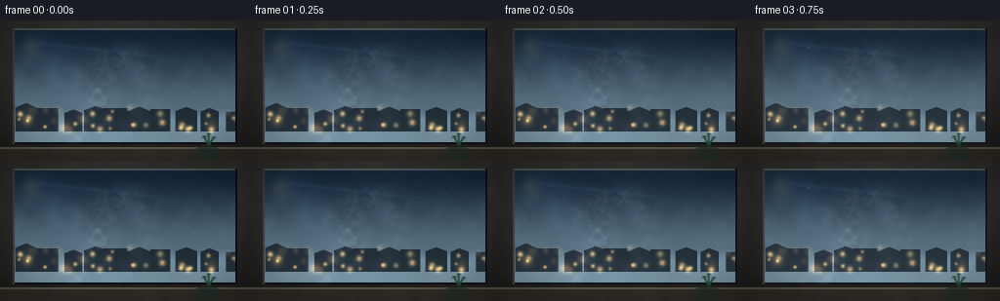
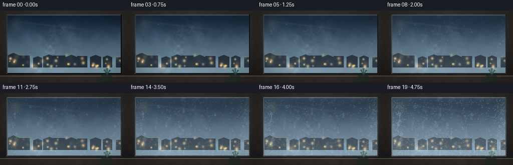

CODING AGENTS AS PIXEL WORLD MODELS
traex/DeepSeek-V4.1-Flash · phygen_112
点击播放 · 原生 RGB 像素
逐轮保存的候选
回放视频、检查图与代码变化。
每份候选均可单独播放。实际图片检查记录在下方工具轨迹中。
候选 01播放与检查图
点击播放 · 原生 RGB 像素


展开代码变化
--- 上一保存版本
+++ 本次保存版本
@@ -0,0 +1,495 @@
+from pathlib import Path
+
+import cv2
+import numpy as np
+from PIL import Image, ImageDraw
+from scipy.ndimage import gaussian_filter
+
+import artifact_io
+
+
+CASE_DIR = Path(__file__).resolve().parent
+WIDTH = 256
+HEIGHT = 144
+FRAMES = 20
+FPS = 4.0
+SCALE = 3
+RW = WIDTH * SCALE
+RH = HEIGHT * SCALE
+
+
+def smoothstep(edge0, edge1, value):
+ x = np.clip((value - edge0) / (edge1 - edge0), 0.0, 1.0)
+ return x * x * (3.0 - 2.0 * x)
+
+
+def resize_noise(rng, size, scale, sigma=0.0):
+ h, w = size
+ small_h = max(3, int(np.ceil(h / scale)))
+ small_w = max(3, int(np.ceil(w / scale)))
+ field = rng.standard_normal((small_h, small_w)).astype(np.float32)
+ image = Image.fromarray(field).resize((w, h), Image.Resampling.BICUBIC)
+ field = np.array(image, dtype=np.float32)
+ if sigma:
+ field = gaussian_filter(field, sigma)
+ field -= field.min()
+ field /= max(float(field.max()), 1e-6)
+ return field
+
+
+def fractal_noise(rng, size, scales, weights, sigma=0.0):
+ field = np.zeros(size, dtype=np.float32)
+ for scale, weight in zip(scales, weights):
+ field += weight * resize_noise(rng, size, scale)
+ if sigma:
+ field = gaussian_filter(field, sigma)
+ field -= field.min()
+ field /= max(float(field.max()), 1e-6)
+ return field
+
+
+def add_glow(image, x, y, radius, color, strength):
+ reach = max(2, int(radius * 3.0))
+ x0 = max(0, int(x) - reach)
+ x1 = min(image.shape[1], int(x) + reach + 1)
+ y0 = max(0, int(y) - reach)
+ y1 = min(image.shape[0], int(y) + reach + 1)
+ if x0 >= x1 or y0 >= y1:
+ return
+ yy, xx = np.mgrid[y0:y1, x0:x1].astype(np.float32)
+ falloff = np.exp(-((xx - x) ** 2 + (yy - y) ** 2) / (2.0 * radius * radius))
+ image[y0:y1, x0:x1] += falloff[:, :, None] * np.asarray(color, dtype=np.float32) * strength
+
+
+def build_window_scene():
+ rng = np.random.default_rng(112)
+ yy, xx = np.mgrid[0:RH, 0:RW].astype(np.float32)
+ u = xx / (RW - 1)
+ v = yy / (RH - 1)
+
+ frame_left = 10 * SCALE
+ frame_right = 246 * SCALE
+ frame_top = 6 * SCALE
+ frame_bottom = 130 * SCALE
+
+ glass_x0, glass_x1 = 13 * SCALE, 243 * SCALE
+ glass_y0, glass_y1 = 8 * SCALE, 127 * SCALE
+ gx = np.clip((xx - glass_x0) / (glass_x1 - glass_x0), 0.0, 1.0)
+ gy = np.clip((yy - glass_y0) / (glass_y1 - glass_y0), 0.0, 1.0)
+
+ # Dark bronze window frame, with a little grain and a beveled inner edge.
+ frame = np.zeros((RH, RW, 3), dtype=np.float32)
+ frame[:] = np.array([28, 27, 25], dtype=np.float32)
+ frame += (18.0 * (1.0 - v))[:, :, None]
+ frame_grain = fractal_noise(rng, (RH, RW), [42, 18, 7], [0.55, 0.30, 0.15], 0.6)
+ frame += (frame_grain[:, :, None] - 0.5) * np.array([9, 7, 5], dtype=np.float32)
+ frame += (smoothstep(0.0, 0.05, u) * smoothstep(1.0, 0.95, u))[:, :, None] * 2.0
+
+ # A cold winter view through the glass.
+ sky_top = np.array([18, 34, 51], dtype=np.float32)
+ sky_horizon = np.array([88, 109, 120], dtype=np.float32)
+ sky_mix = smoothstep(0.0, 0.72, gy)[:, :, None]
+ glass = sky_top + (sky_horizon - sky_top) * sky_mix
+
+ cloud = fractal_noise(rng, (RH, RW), [38, 20, 9], [0.55, 0.30, 0.15], 1.4)
+ cloud_band = np.exp(-((gy - 0.35) / 0.20) ** 2) * smoothstep(0.0, 0.18, gy)
+ glass += ((cloud - 0.46) * cloud_band * 18.0)[:, :, None] * np.array(
+ [0.65, 0.82, 1.0], dtype=np.float32
+ )
+
+ horizon = 0.69
+ ground_noise = fractal_noise(rng, (RH, RW), [46, 18], [0.7, 0.3], 1.0)
+ ground = smoothstep(horizon - 0.015, horizon + 0.12, gy)
+ snow_color = np.array([131, 153, 162], dtype=np.float32)
+ glass = glass * (1.0 - ground[:, :, None] * 0.74) + snow_color * ground[:, :, None] * 0.74
+ glass += ((ground_noise - 0.5) * ground * 13.0)[:, :, None] * np.array(
+ [0.9, 0.95, 1.0], dtype=np.float32
+ )
+
+ # Distant roofs and a sparse row of warm windows.
+ buildings = Image.new("RGBA", (RW, RH), (0, 0, 0, 0))
+ draw = ImageDraw.Draw(buildings)
+ city_rng = np.random.default_rng(707)
+ building_data = []
+ for index in range(12):
+ bx = int((-0.03 + index * 0.092 + city_rng.uniform(-0.015, 0.015)) * RW)
+ bw = int(city_rng.uniform(0.055, 0.095) * RW)
+ roof = int((0.64 + city_rng.uniform(-0.025, 0.025)) * RH)
+ bottom = int(0.79 * RH)
+ color = (22, 31, 39, 225)
+ draw.rectangle((bx, roof, bx + bw, bottom), fill=color)
+ if city_rng.random() < 0.65:
+ peak = roof - int(city_rng.uniform(0.018, 0.055) * RH)
+ draw.polygon([(bx - 2, roof + 1), ((bx + bx + bw) // 2, peak), (bx + bw + 2, roof + 1)], fill=color)
+ building_data.append((bx, roof, bw, bottom))
+
+ glass_layer = Image.fromarray(np.uint8(np.clip(glass, 0, 255)), mode="RGB").convert("RGBA")
+ glass_layer.alpha_composite(buildings)
+ glass = np.asarray(glass_layer.convert("RGB"), dtype=np.float32)
+
+ for bx, roof, bw, bottom in building_data:
+ for _ in range(int(city_rng.integers(1, 5))):
+ wx = int(bx + city_rng.uniform(0.18, 0.82) * bw)
+ wy = int(city_rng.uniform(roof + 0.02 * RH, bottom - 0.01 * RH))
+ if 0 <= wx < RW and 0 <= wy < RH:
+ add_glow(
+ glass,
+ wx,
+ wy,
+ city_rng.uniform(1.0, 2.4) * SCALE,
+ np.array([255, 186, 93], dtype=np.float32),
+ city_rng.uniform(0.35, 0.85),
+ )
+
+ # Soft, out-of-focus city lights and a faint warm room reflection.
+ for _ in range(12):
+ bx = city_rng.uniform(0.04, 0.96) * RW
+ by = city_rng.uniform(0.58, 0.79) * RH
+ radius = city_rng.uniform(1.7, 4.2) * SCALE
+ add_glow(
+ glass,
+ bx,
+ by,
+ radius,
+ np.array([255, 168, 76], dtype=np.float32),
+ city_rng.uniform(0.10, 0.27),
+ )
+
+ reflection_band = np.exp(
+ -((u - (0.12 + 0.34 * v)) / (0.075 + 0.035 * v)) ** 2
+ )
+ reflection_band *= smoothstep(0.0, 0.10, v) * (1.0 - 0.4 * smoothstep(0.70, 1.0, v))
+ glass += (reflection_band * 8.0)[:, :, None] * np.array([0.70, 0.86, 1.0], dtype=np.float32)
+ add_glow(glass, 0.12 * RW, 0.19 * RH, 7.5 * SCALE, np.array([255, 181, 96]), 0.10)
+
+ # The pane is clipped into the frame, then given a cool inner bevel.
+ pane_mask = (xx >= glass_x0) & (xx < glass_x1) & (yy >= glass_y0) & (yy < glass_y1)
+ scene = frame.copy()
+ scene[pane_mask] = glass[pane_mask]
+
+ bevel_dark = np.array([7, 10, 11], dtype=np.float32)
+ bevel_light = np.array([77, 83, 81], dtype=np.float32)
+ scene[glass_y0:glass_y0 + 2 * SCALE, glass_x0:glass_x1] = bevel_light
+ scene[glass_y1 - 2 * SCALE:glass_y1, glass_x0:glass_x1] = bevel_dark
+ scene[glass_y0:glass_y1, glass_x0:glass_x0 + 2 * SCALE] = bevel_light * 0.72
+ scene[glass_y0:glass_y1, glass_x1 - 2 * SCALE:glass_x1] = bevel_dark
+
+ # Window sill, with a bright top edge and a darker front face.
+ sill_top = frame_bottom
+ scene[sill_top:sill_top + 2 * SCALE] = np.array([88, 82, 71], dtype=np.float32)
+ scene[sill_top + 2 * SCALE:] = np.array([45, 41, 36], dtype=np.float32)
+ sill_grain = frame_grain[sill_top + 2 * SCALE:]
+ scene[sill_top + 2 * SCALE:] += (sill_grain[:, :, None] - 0.5) * 7.0
+
+ # A small dark object on the sill anchors the close camera.
+ pot_mask = Image.new("L", (RW, RH), 0)
+ pot_draw = ImageDraw.Draw(pot_mask)
+ pot_draw.ellipse(
+ (
+ int(0.775 * RW),
+ int(0.892 * RH),
+ int(0.884 * RW),
+ int(0.995 * RH),
+ ),
+ fill=210,
+ )
+ pot_draw.rectangle(
+ (
+ int(0.795 * RW),
+ int(0.934 * RH),
+ int(0.867 * RW),
+ int(0.995 * RH),
+ ),
+ fill=245,
+ )
+ pot_mask = np.asarray(pot_mask, dtype=np.float32)[:, :, None] / 255.0
+ pot_color = np.array([34, 47, 40], dtype=np.float32)
+ scene = scene * (1.0 - pot_mask * 0.88) + pot_color * (pot_mask * 0.88)
+ stem_x = 0.835 * RW
+ stem_y = 0.895 * RH
+ for dx, dy in [(-0.018, -0.065), (0.0, -0.085), (0.020, -0.060)]:
+ stem = Image.new("RGBA", (RW, RH), (0, 0, 0, 0))
+ stem_draw = ImageDraw.Draw(stem)
+ stem_draw.line(
+ (stem_x, stem_y, stem_x + dx * RW, stem_y + dy * RH),
+ fill=(32, 65, 45, 230),
+ width=2 * SCALE,
+ )
+ stem_draw.ellipse(
+ (
+ stem_x + dx * RW - 2.2 * SCALE,
+ stem_y + dy * RH - 1.2 * SCALE,
+ stem_x + dx * RW + 2.2 * SCALE,
+ stem_y + dy * RH + 1.2 * SCALE,
+ ),
+ fill=(41, 82, 55, 235),
+ )
+ stem_np = np.asarray(stem, dtype=np.float32)
+ alpha = stem_np[:, :, 3:4] / 255.0
+ scene = scene * (1.0 - alpha) + stem_np[:, :, :3] * alpha
+
+ # Fine glass reflections.
+ sheen = np.exp(-((gy - (0.10 + 0.22 * gx)) / 0.018) ** 2)
+ sheen *= smoothstep(0.03, 0.20, gx) * (1.0 - smoothstep(0.55, 0.80, gx))
+ scene[pane_mask] += (sheen[pane_mask] * 9.0)[:, None] * np.array([0.72, 0.88, 1.0])
+ edge_light = (
+ np.exp(-(gx / 0.025) ** 2)
+ + np.exp(-((1.0 - gx) / 0.025) ** 2)
+ + np.exp(-((1.0 - gy) / 0.018) ** 2)
+ )
+ scene[pane_mask] += (edge_light[pane_mask] * 4.0)[:, None] * np.array([0.65, 0.82, 0.93])
+
+ # Subtle cool cast, glass vignette, and restrained bloom around warm lights.
+ scene[pane_mask] *= np.array([0.94, 0.985, 1.03], dtype=np.float32)
+ vignette = 1.0 - 0.24 * (smoothstep(0.55, 1.0, np.sqrt((u - 0.5) ** 2 + (v - 0.5) ** 2) * 1.45))
+ scene *= vignette[:, :, None]
+ warm = np.maximum(scene[:, :, 0] - scene[:, :, 2], 0.0)
+ warm_blur = gaussian_filter(warm, 2.3 * SCALE)
+ scene += warm_blur[:, :, None] * np.array([0.16, 0.08, 0.01], dtype=np.float32)
+
+ return np.clip(scene, 0, 255).astype(np.float32), (glass_x0, glass_y0, glass_x1, glass_y1)
+
+
+def build_condensation_assets(pane):
+ rng = np.random.default_rng(2211)
+ glass_x0, glass_y0, glass_x1, glass_y1 = pane
+ yy, xx = np.mgrid[0:RH, 0:RW].astype(np.float32)
+ gx = np.clip((xx - glass_x0) / (glass_x1 - glass_x0), 0.0, 1.0)
+ gy = np.clip((yy - glass_y0) / (glass_y1 - glass_y0), 0.0, 1.0)
+
+ fog_texture = fractal_noise(rng, (RH, RW), [54, 28, 14, 7], [0.40, 0.31, 0.19, 0.10], 1.1)
+ fog_texture = 0.45 + 0.55 * fog_texture
+ edge_distance = np.minimum.reduce(
+ [
+ gx,
+ 1.0 - gx,
+ gy,
+ 1.0 - gy,
+ ]
+ )
+ edge_bias = np.exp(-edge_distance / 0.075)
+ lower_bias = 0.22 + 0.78 * smoothstep(0.16, 0.92, gy)
+ fog_shape = np.clip(0.28 + 0.70 * lower_bias + 0.26 * edge_bias, 0.0, 1.0)
+ fog_shape *= 0.72 + 0.28 * fog_texture
+
+ frost_texture = fractal_noise(rng, (RH, RW), [23, 10, 5], [0.5, 0.3, 0.2], 0.7)
+ frost_edge = np.exp(-edge_distance / 0.042)
+ frost_veins = np.clip((frost_texture - 0.47) * 2.7, 0.0, 1.0)
+ frost_mask = frost_edge * frost_veins
+
+ steam_noise_a = fractal_noise(rng, (RH, RW), [42, 21, 9, 5], [0.35, 0.30, 0.22, 0.13], 0.65)
+ steam_noise_b = fractal_noise(rng, (RH, RW), [34, 15, 7], [0.48, 0.32, 0.20], 1.0)
+
+ micro = []
+ for _ in range(1350):
+ mx = rng.uniform(0.015, 0.985)
+ my = rng.uniform(0.035, 0.985)
+ if rng.random() < 0.32:
+ my = 1.0 - abs(rng.normal(0.0, 0.20))
+ if rng.random() < 0.28:
+ mx = rng.choice([rng.uniform(0.015, 0.10), rng.uniform(0.90, 0.985)])
+ micro.append(
+ (
+ mx,
+ np.clip(my, 0.02, 0.99),
+ rng.uniform(0.30, 0.86),
+ rng.uniform(0.00, 0.72),
+ rng.uniform(0.72, 1.0),
+ )
+ )
+
+ large = []
+ for _ in range(112):
+ lx = rng.uniform(0.025, 0.975)
+ ly = 0.10 + 0.88 * (rng.random() ** 0.72)
+ if rng.random() < 0.30:
+ lx = rng.choice([rng.uniform(0.02, 0.10), rng.uniform(0.90, 0.98)])
+ activation = 0.02 + 0.66 * (rng.random() ** 1.55)
+ radius = rng.uniform(0.75, 3.2) * (0.72 + 0.55 * (1.0 - ly))
+ trail = rng.random() < 0.24
+ speed = rng.uniform(0.055, 0.14) if trail else 0.0
+ large.append((lx, ly, radius, activation, trail, speed, rng.uniform(0.0, 1.0)))
+
+ return {
+ "gx": gx,
+ "gy": gy,
+ "fog_shape": fog_shape,
+ "frost_mask": frost_mask,
+ "steam_noise_a": steam_noise_a,
+ "steam_noise_b": steam_noise_b,
+ "micro": micro,
+ "large": large,
+ }
+
+
+def draw_steam(image, assets, t, pane):
+ glass_x0, glass_y0, glass_x1, glass_y1 = pane
+ gx = assets["gx"]
+ gy = assets["gy"]
+ phase = 0.8 * t
+
+ center_a = 0.30 + 0.20 * (1.0 - gy) + 0.035 * np.sin(gy * 10.5 + phase)
+ width_a = 0.030 + 0.095 * (1.0 - gy) ** 0.72
+ envelope_a = np.exp(-((gx - center_a) / width_a) ** 2)
+ envelope_a *= smoothstep(0.05, 0.25, gy) * (1.0 - smoothstep(0.79, 1.0, gy) * 0.55)
+
+ center_b = 0.63 - 0.08 * gy + 0.028 * np.sin(gy * 12.0 - phase * 1.3 + 0.8)
+ width_b = 0.026 + 0.075 * (1.0 - gy) ** 0.75
+ envelope_b = np.exp(-((gx - center_b) / width_b) ** 2)
+ envelope_b *= smoothstep(0.17, 0.35, gy) * (1.0 - smoothstep(0.84, 1.0, gy))
+
+ shift = int(round(7 * SCALE * t))
+ noise_a = np.roll(assets["steam_noise_a"], shift=(-shift, shift // 2), axis=(0, 1))
+ noise_b = np.roll(assets["steam_noise_b"], shift=(-shift // 2, -shift), axis=(0, 1))
+ alpha_a = envelope_a * np.clip((noise_a - 0.31) * 1.75, 0.0, 1.0)
+ alpha_b = envelope_b * np.clip((noise_b - 0.37) * 1.65, 0.0, 1.0)
+ alpha = (0.145 * alpha_a + 0.085 * alpha_b) * (1.0 - 0.38 * t)
+
+ pane_mask = (assets["gx"] > 0) & (assets["gx"] < 1) & (assets["gy"] > 0) & (assets["gy"] < 1)
+ alpha = alpha * pane_mask
+ steam_color = np.array([208, 219, 218], dtype=np.float32)
+ image += alpha[:, :, None] * steam_color
+ return image
+
+
+def draw_trail(image, x0, y0, y1, radius, alpha, pane):
+ glass_x0, glass_y0, glass_x1, glass_y1 = pane
+ x = glass_x0 + x0 * (glass_x1 - glass_x0)
+ ya = glass_y0 + y0 * (glass_y1 - glass_y0)
+ yb = glass_y0 + y1 * (glass_y1 - glass_y0)
+ radius_px = max(0.9 * SCALE, radius * SCALE * 0.56)
+ pad = int(radius_px * 2.8 + 2)
+ xa = max(0, int(x) - pad)
+ xb = min(RW, int(x) + pad + 1)
+ yc = max(0, int(ya) - pad)
+ yd = min(RH, int(yb) + pad + 1)
+ if xa >= xb or yc >= yd:
+ return image
+ yy, xx = np.mgrid[yc:yd, xa:xb].astype(np.float32)
+ dx = xx - x
+ centerline = np.clip(yy, ya, yb)
+ distance = np.sqrt(dx * dx + (yy - centerline) ** 2)
+ core = np.exp(-(distance / radius_px) ** 2)
+ side = np.exp(-((distance - radius_px * 0.78) / (radius_px * 0.24)) ** 2)
+ patch = image[yc:yd, xa:xb]
+ tint = np.array([202, 222, 226], dtype=np.float32)
+ patch += (core * alpha * 24.0)[:, :, None] * (tint / 255.0)
+ patch += (side * alpha * 8.0)[:, :, None] * (tint / 255.0)
+ patch -= (core * alpha * 4.0)[:, :, None]
+ image[yc:yd, xa:xb] = patch
+ return image
+
+
+def draw_drop(image, x0, y0, radius, alpha, pane):
+ glass_x0, glass_y0, glass_x1, glass_y1 = pane
+ x = glass_x0 + x0 * (glass_x1 - glass_x0)
+ y = glass_y0 + y0 * (glass_y1 - glass_y0)
+ radius_px = max(0.75 * SCALE, radius * SCALE)
+ pad = int(radius_px * 2.9 + 3)
+ xa = max(0, int(x) - pad)
+ xb = min(RW, int(x) + pad + 1)
+ yc = max(0, int(y) - pad)
+ yd = min(RH, int(y) + pad + 1)
+ if xa >= xb or yc >= yd:
+ return image
+ yy, xx = np.mgrid[yc:yd, xa:xb].astype(np.float32)
+ dx = (xx - x) / radius_px
+ dy = (yy - y) / radius_px
+ rr = np.sqrt(dx * dx + dy * dy)
+ circle = smoothstep(1.03, 0.88, rr)
+ rim = np.exp(-((rr - 0.77) / 0.18) ** 2)
+ rim_hi = rim * np.clip(dx * 0.56 + dy * 0.83, 0.0, 1.0)
+ rim_dark = rim * np.clip(-(dx * 0.55 + dy * 0.83), 0.0, 1.0)
+ specular = np.exp(-(((dx + 0.33) / 0.20) ** 2 + ((dy + 0.34) / 0.18) ** 2))
+ lower_glint = np.exp(-(((dx - 0.26) / 0.20) ** 2 + ((dy - 0.48) / 0.20) ** 2))
+
+ patch = image[yc:yd, xa:xb]
+ cool = np.array([195, 216, 220], dtype=np.float32)
+ warm_edge = np.array([245, 239, 217], dtype=np.float32)
+ patch *= (1.0 - circle * 0.08 * alpha)[:, :, None]
+ patch += (circle * alpha * 0.07)[:, :, None] * cool
+ patch -= (rim_dark * alpha * 9.0)[:, :, None]
+ patch += (rim_hi * alpha * 21.0)[:, :, None] * (warm_edge / 255.0)
+ patch += (specular * alpha * 38.0)[:, :, None] * (warm_edge / 255.0)
+ patch += (lower_glint * alpha * 9.0)[:, :, None] * (cool / 255.0)
+ image[yc:yd, xa:xb] = patch
+ return image
+
+
+def render_frame(base, assets, pane, frame_index):
+ t = frame_index / (FRAMES - 1)
+ glass_x0, glass_y0, glass_x1, glass_y1 = pane
+ image = base.copy()
+ pane_mask = (assets["gx"] > 0) & (assets["gx"] < 1) & (assets["gy"] > 0) & (assets["gy"] < 1)
+
+ fog_amount = 0.015 + 0.45 * (t ** 1.22)
+ fog_alpha = fog_amount * assets["fog_shape"]
+ fog_alpha *= 0.88 + 0.12 * np.sin(frame_index * 0.19 + assets["gy"] * 2.0)
+ fog_alpha = np.clip(fog_alpha, 0.0, 0.47) * pane_mask
+ fog_color = np.array([194, 214, 218], dtype=np.float32)
+ image = image * (1.0 - fog_alpha[:, :, None]) + fog_color * fog_alpha[:, :, None]
+
+ frost_alpha = (assets["frost_mask"] * (0.02 + 0.17 * t ** 1.6) * pane_mask)
+ frost_color = np.array([218, 234, 236], dtype=np.float32)
+ image = image * (1.0 - frost_alpha[:, :, None]) + frost_color * frost_alpha[:, :, None]
+
+ # Microcondensation appears as a fine, granular veil before the beads.
+ micro_overlay = Image.new("RGBA", (RW, RH), (0, 0, 0, 0))
+ micro_draw = ImageDraw.Draw(micro_overlay)
+ for mx, my, radius, activation, opacity in assets["micro"]:
+ if t < activation:
+ continue
+ progress = np.clip((t - activation) / max(0.18, 1.0 - activation), 0.0, 1.0)
+ r = radius * SCALE * (0.45 + 0.75 * progress)
+ x = glass_x0 + mx * (glass_x1 - glass_x0)
+ y = glass_y0 + my * (glass_y1 - glass_y0)
+ fill_alpha = int(np.clip(18 + 28 * progress * opacity, 0, 58))
+ micro_draw.ellipse((x - r, y - r, x + r, y + r), fill=(195, 218, 222, fill_alpha))
+ if r > 1.2:
+ micro_draw.point((x - 0.22 * r, y - 0.24 * r), fill=(240, 248, 246, min(150, fill_alpha + 42)))
+ micro_np = np.asarray(micro_overlay, dtype=np.float32)
+ micro_alpha = micro_np[:, :, 3:4] / 255.0
+ image = image * (1.0 - micro_alpha) + micro_np[:, :, :3] * micro_alpha
+
+ # A handful of beads grow large enough to deform the view and run downward.
+ for lx, ly, radius, activation, trail, speed, variation in assets["large"]:
+ if t < activation:
+ continue
+ progress = np.clip((t - activation) / max(0.20, 1.0 - activation), 0.0, 1.0)
+ current_y = ly
+ if trail:
+ run = smoothstep(0.18, 1.0, progress)
+ current_y = min(0.985, ly + speed * (run ** 1.35))
+ if current_y > ly + 0.004:
+ image = draw_trail(image, lx, ly, current_y, radius * (0.65 + 0.45 * progress), 0.35 + 0.35 * variation, pane)
+ grown_radius = radius * (0.46 + 0.76 * progress) * (0.92 + 0.10 * variation)
+ image = draw_drop(image, lx, current_y, grown_radius, 0.72 + 0.28 * variation, pane)
+
+ image = draw_steam(image, assets, t, pane)
+
+ # Condensation scatters the cold light and softly veils the frame edge.
+ cool_cast = 0.018 * t
+ image[pane_mask] *= np.array([1.0 - cool_cast * 0.35, 1.0 - cool_cast * 0.08, 1.0 + cool_cast], dtype=np.float32)
+ grain_rng = np.random.default_rng(9000 + frame_index)
+ grain = grain_rng.normal(0.0, 1.0, (RH, RW, 1)).astype(np.float32)
+ image += grain * 1.15
+ return np.clip(image, 0, 255).astype(np.uint8)
+
+
+def main():
+ base, pane = build_window_scene()
+ assets = build_condensation_assets(pane)
+ frames = []
+ for frame_index in range(FRAMES):
+ high_res = render_frame(base, assets, pane, frame_index)
+ low_res = cv2.resize(high_res, (WIDTH, HEIGHT), interpolation=cv2.INTER_AREA)
+ frames.append(low_res)
+ print(f"rendered frame {frame_index + 1:02d}/{FRAMES}", flush=True)
+
+ frames = np.stack(frames).astype(np.uint8)
+ artifact_io.save(frames, CASE_DIR)
+ print(f"saved {frames.shape} to {CASE_DIR}")
+
+
+if __name__ == "__main__":
+ main()
候选 02播放与检查图
点击播放 · 原生 RGB 像素

展开代码变化
--- 上一保存版本
+++ 本次保存版本
@@ -67,9 +67,6 @@
u = xx / (RW - 1)
v = yy / (RH - 1)
- frame_left = 10 * SCALE
- frame_right = 246 * SCALE
- frame_top = 6 * SCALE
frame_bottom = 130 * SCALE
glass_x0, glass_x1 = 13 * SCALE, 243 * SCALE
@@ -123,7 +120,7 @@
draw.polygon([(bx - 2, roof + 1), ((bx + bx + bw) // 2, peak), (bx + bw + 2, roof + 1)], fill=color)
building_data.append((bx, roof, bw, bottom))
- glass_layer = Image.fromarray(np.uint8(np.clip(glass, 0, 255)), mode="RGB").convert("RGBA")
+ glass_layer = Image.fromarray(np.uint8(np.clip(glass, 0, 255))).convert("RGBA")
glass_layer.alpha_composite(buildings)
glass = np.asarray(glass_layer.convert("RGB"), dtype=np.float32)
可观测工具轨迹
实际执行的命令与返回图片。
命令 1exit 0
/bin/bash -lc "pwd && rg --files -g '"'!*.mp4'"' -g '"'!*.mov'"' -g '"'!*.webm'"' | sed -n '1,200p'"
命令 2exit 0
/bin/bash -lc 'cat prompt.txt'
命令 3exit 0
/bin/bash -lc 'cat GENERATION_RULES.md'
命令 4exit 0
/bin/bash -lc 'cat task_spec.json'
命令 5exit 0
/bin/bash -lc "sed -n '1,260p' artifact_io.py"
命令 6exit 0
/bin/bash -lc "sed -n '1,260p' player_template.html"
命令 7exit 0
/bin/bash -lc 'git status --short'
命令 8exit 0
/bin/bash -lc "python - <<'PY' import importlib.util for m in ['numpy','PIL','scipy','cv2','imageio','matplotlib']: print(m, bool(importlib.util.find_spec(m))) PY"
命令 9exit 0
/bin/bash -lc "find . -maxdepth 2 -type f -printf '%P %s bytes\\n' | sort"
命令 10exit 1
/bin/bash -lc 'python generate.py'
命令 11exit 0
/bin/bash -lc 'python generate.py'
命令 12exit 0
/bin/bash -lc "ls -lh inspection.png transition_check.png pixels.npz index.html frames/00.png frames/19.png && python - <<'PY' from PIL import Image import numpy as np for p in ['frames/00.png','frames/05.png','frames/10.png','frames/15.png','frames/19.png']: a=np.asarray(Image.open(p)) print(p, 'mean', np.round(a.mean((0,1)),1), 'std', round(float(a.std()),1)) PY"
命令 13exit 0
/bin/bash -lc "python - <<'PY'
from PIL import Image
im=Image.open('inspection.png')
im.resize((1536,660)).save('.tmp/inspection_large.png')
im=Image.open('transition_check.png')
im.resize((1536,573)).save('.tmp/transition_large.png')
PY"命令 14exit 0
/bin/bash -lc "python - <<'PY'
from PIL import Image, ImageChops, ImageStat
for i in range(1,20):
a=Image.open(f'frames/{i-1:02d}.png')
b=Image.open(f'frames/{i:02d}.png')
d=ImageChops.difference(a,b)
print(f'{i-1:02d}->{i:02d}', round(sum(ImageStat.Stat(d).mean)/3,2))
PY"命令 15exit 1
/bin/bash -lc "python - <<'PY'
import numpy as np, json, base64, re
from PIL import Image
from pathlib import Path
spec=json.loads(Path('task_spec.json').read_text())
arr=np.load('pixels.npz')['pixels']
print('pixels',arr.shape,arr.dtype,'expected', (spec['height'],spec['width'],spec['frames']))
frames=np.stack([np.asarray(Image.open(f'frames/{i:02d}.png')) for i in range(spec['frames'])])
print('png frames',frames.shape,frames.dtype,'pixel equality',np.array_equal(arr.transpose(2,0,1), (frames[:,:, :,0].astype(np.uint32)<<16)|(frames[:,:, :,1].astype(np.uint32)<<8)|frames[:,:, :,2]))
html=Path('index.html').read_text()
m=re.search(r'const DATA=(\\{.*?\\}),W=',html)
data=json.loads(m.group(1))
print('player frames',1+len(data['deltas']),'captions',data['caption'])
# reconstruct and compare decoded frames
p=base64.b64decode(data['first']); first=np.frombuffer(p,dtype='<u4')
cur=first.copy(); dec=[cur.copy()]
for enc in data['deltas']:
pkt=np.frombuffer(base64.b64decode(enc),dtype='<u4')
for j in range(0,len(pkt),2):
st,cnt=int(pkt[j]),int(pkt[j+1]); cur[st:st+cnt]=pkt[j+2:j+2+cnt]
dec.append(cur.copy())
dec=np.stack(dec).reshape(20,144,256)
print('decoded player pixel match', np.array_equal(dec,arr.transpose(2,0,1)))
# scene region diagnostics
for i in [0,5,10,15,19]:
f=frames[i]
pane=f[8:128,13:243]
print(i, 'pane mean',np.round(pane.mean((0,1)),1),'pane contrast',round(float(pane.std()),1),'edge frac',round(float((pane.mean(2)<45).mean()),3))
PY"命令 16exit 0
/bin/bash -lc "python - <<'PY'
import numpy as np, json, base64, re
from PIL import Image
from pathlib import Path
spec=json.loads(Path('task_spec.json').read_text())
arr=np.load('pixels.npz')['pixels']
frames=np.stack([np.asarray(Image.open(f'frames/{i:02d}.png')) for i in range(spec['frames'])])
html=Path('index.html').read_text()
data=json.loads(re.search(r'const DATA=(\\{.*?\\}),W=',html).group(1))
cur=np.frombuffer(base64.b64decode(data['first']),dtype='<u4').copy(); dec=[cur.copy()]
for enc in data['deltas']:
raw=np.frombuffer(base64.b64decode(enc),dtype='<u4')
j=0
while j < len(raw):
st,cnt=int(raw[j]),int(raw[j+1]); cur[st:st+cnt]=raw[j+2:j+2+cnt]; j+=2+cnt
dec.append(cur.copy())
dec=np.stack(dec).reshape(20,144,256)
print('decoded player pixel match', np.array_equal(dec,arr.transpose(2,0,1)))
for i in [0,5,10,15,19]:
f=frames[i]
pane=f[8:128,13:243]
print(i, 'pane mean',np.round(pane.mean((0,1)),1),'pane contrast',round(float(pane.std()),1),'dark frac',round(float((pane.mean(2)<45).mean()),3))
PY"命令 17exit 0
/bin/bash -lc "python - <<'PY'
from PIL import Image
import numpy as np
im=Image.open('frames/19.png')
a=np.asarray(im)
# Upscale nearest and bicubic for local visual artifacts/QA sheets.
im.resize((1024,576),Image.Resampling.NEAREST).save('.tmp/final_nearest.png')
im.resize((1024,576),Image.Resampling.BICUBIC).save('.tmp/final_bicubic.png')
# diagnostics: edge/detail by rows and columns
lum=a.mean(2)
gx=np.abs(np.diff(lum,axis=1)); gy=np.abs(np.diff(lum,axis=0))
print('edge mean x/y',gx.mean(),gy.mean())
print('row edge maxima',[(i,round(float(gx[i].mean()),2)) for i in range(0,144,12)])
print('col edge maxima',[(i,round(float(gy[:,i].mean()),2)) for i in range(0,256,24)])
PY"命令 18exit 0
/bin/bash -lc "sed -n '1,240p' generate.py"
命令 19exit 0
/bin/bash -lc "sed -n '240,520p' generate.py"
命令 20exit 0
/bin/bash -lc "python - <<'PY'
from PIL import Image, ImageOps
import numpy as np
chars=' .:-=+*#%@'
for name in ['frames/00.png','frames/19.png']:
im=Image.open(name).convert('L')
# crop glass and fit 72x30
a=np.asarray(im.resize((72,32),Image.Resampling.BOX),dtype=float)
print('\\n',name)
lo,hi=np.percentile(a,[2,98]); a=np.clip((a-lo)/(hi-lo),0,1)
for row in a:
print(''.join(chars[min(len(chars)-1,int(x*(len(chars)-1)))] for x in row))
PY"命令 21exit 0
/bin/bash -lc "python - <<'PY'
from PIL import Image
import numpy as np
from scipy.ndimage import gaussian_filter
for i in [0,5,10,15,19]:
a=np.asarray(Image.open(f'frames/{i:02d}.png'),dtype=float)
pane=a[8:128,13:243]
lum=pane.mean(2)
blur=gaussian_filter(lum,1.0)
detail=np.abs(lum-blur)
print(i,'pane detail',round(float(detail.mean()),2),'p95',round(float(np.percentile(detail,95)),2),'min/max',int(lum.min()),int(lum.max()))
# spatial concentration of frame-to-frame change
prev=None
for i in range(20):
a=np.asarray(Image.open(f'frames/{i:02d}.png'),dtype=float)
if prev is not None:
d=np.abs(a-prev).mean(2)
pane=d[8:128,13:243]
print(i, 'diff mean',round(float(pane.mean()),2),'p99',round(float(np.percentile(pane,99)),2),'max',round(float(pane.max()),2))
prev=a
PY"命令 22exit 0
/bin/bash -lc 'python generate.py'
命令 23exit 0
/bin/bash -lc "python - <<'PY'
import base64, json, re
from pathlib import Path
import numpy as np
from PIL import Image
spec=json.loads(Path('task_spec.json').read_text())
frames=np.stack([np.asarray(Image.open(f'frames/{i:02d}.png')) for i in range(spec['frames'])])
packed=np.load('pixels.npz')['pixels']
expected=(frames[:,:,:,0].astype(np.uint32)<<16)|(frames[:,:,:,1].astype(np.uint32)<<8)|frames[:,:,:,2]
assert frames.shape==(20,144,256,3) and frames.dtype==np.uint8
assert np.array_equal(packed,expected.transpose(1,2,0))
html=Path('index.html').read_text()
data=json.loads(re.search(r'const DATA=(\\{.*?\\}),W=',html).group(1))
cur=np.frombuffer(base64.b64decode(data['first']),dtype='<u4').copy()
decoded=[cur.copy()]
for enc in data['deltas']:
raw=np.frombuffer(base64.b64decode(enc),dtype='<u4'); j=0
while j<len(raw):
start,count=int(raw[j]),int(raw[j+1]); cur[start:start+count]=raw[j+2:j+2+count]; j+=2+count
decoded.append(cur.copy())
assert np.array_equal(np.stack(decoded).reshape(20,144,256),packed.transpose(2,0,1))
print('PASS: 20 RGB frames, 256x144, artifact/player pixel equality verified')
print('frame range',int(frames.min()),int(frames.max()),'mean luminance',round(float(frames.mean()),2))
PY
find frames -maxdepth 1 -name '*.png' | wc -l
ls -lh generate.py pixels.npz index.html inspection.png"保存候选 2 份；完成命令 23 次；可验证图片返回 0 张。原始 API 响应与完整日志保留在本地。